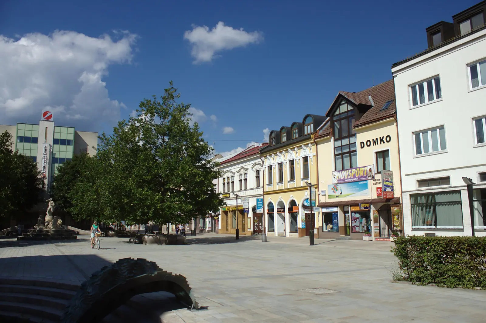
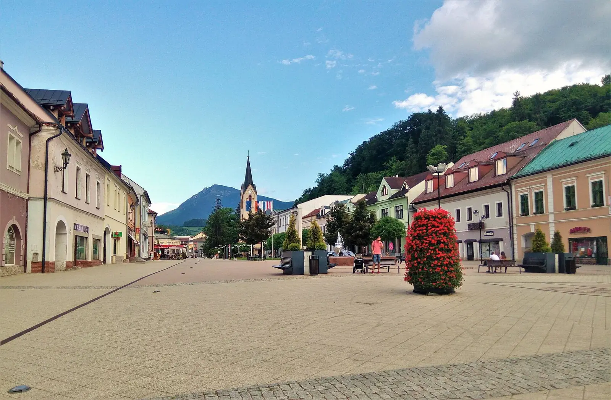
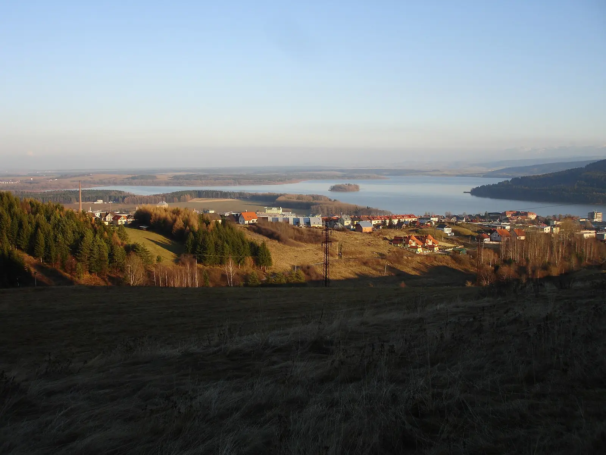

Zdroje fotografií
Fotografie miest pochádzajú z Wikimedia Commons. Pre web sme ich zmenšili a orezali. Upravené verzie sú dostupné pod rovnakou licenciou ako originály.

Martin, námestie SNP
Autor: Aktron · CC BY-SA 4.0 · zdroj

Dolný Kubín, Hviezdoslavovo námestie
Autor: Kamil Czainski · CC BY-SA 4.0 · zdroj

Námestovo a Oravská priehrada
Autor: Marek.jenej (en.wikipedia) · CC BY-SA 3.0 · zdroj


Ostatné obrázky
Fotografie Ružomberka a Liptovského Mikuláša sú z dizajnových podkladov webu. Video a fotky hôr na pozadí sú vlastné alebo vygenerované pre nacenime.sk.
Ak ste autorom niektorej fotografie a chcete upraviť uvedenie, napíšte na info@nacenime.sk.